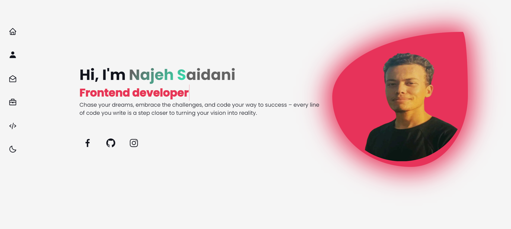

Les activités du stage
1-Creation de portfolio :
Ma première activité consistait à développer une application web pour mon portfolio en utilisant HTML5, CSS3 et JavaScript.
OPEN CODE
2-Deuxième activité :
Cette illustration illustre le schéma des cas d'utilisation, dépeignant le fonctionnement opérationnel de l'application Gymify.
Elle inclut les acteurs tels que le Visiteur, l'Utilisateur et l'Admin,et permet de détailler les échanges entre les acteurs et le système

3-Troisième activité :
Le diagramme de classes candidates représente la première structure statique du système d'information.
Il s'agit d'une version préliminaire du diagramme de classes qui met l'accent sur les classes et leurs relations,
sans nécessairement fournir de détails sur les attributs et les opérations.
4-Quatrième activité :
Lorsque les coordonnées du destinataire sont entrées, cette vérification finale est réalisée de manière asynchrone.
En saisissant le nombre de jetons à transférer au portefeuille du destinataire, une vérification du nombre de jetons dans le portefeuille est effectuée,
et si la vérification est réussie, le transfert est accompli avec succès.